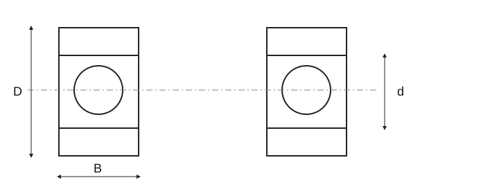

Roulements

Roulements · durée nominale
| Élément | Valeur / relation | Signification |
|---|---|---|
| Durée nominale | L₁₀ = (C/P)^p | L₁₀ en millions de tours; C et P mêmes unités de force |
| Roulement à billes | p = 3 | Exposant de durée |
| Roulement à rouleaux | p = 10/3 | Exposant de durée |
| Durée en heures | L₁₀h = 106·L₁₀/(60n) | n en min⁻¹; charge et vitesse constantes |
| Sécurité statique | s₀ = C₀/P₀ | C₀ et P₀ selon la spécification du roulement |
Roulements · symboles dimensionnels
| Élément | Valeur / relation | Signification |
|---|---|---|
| Diamètre intérieur | d | Dimension du roulement; pas tolérance d’ajustement |
| Diamètre extérieur | D | Dimension du roulement; produit précis selon catalogue |
| Largeur | B | Roulement radial; géométrie différente pour butées |